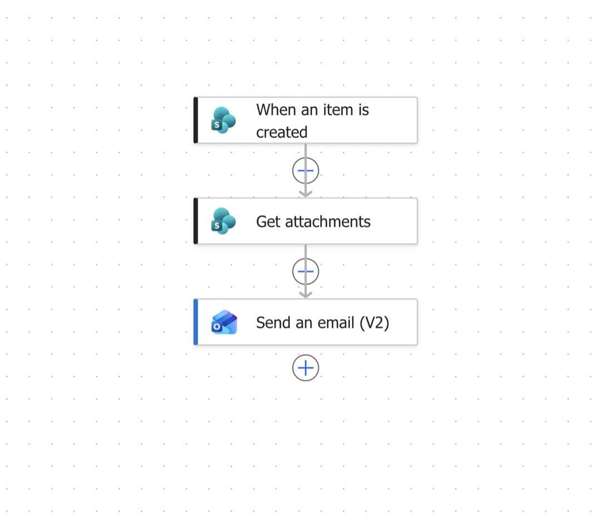

The loop felt familiar
I watched a dog chase his tail until he got tired and stopped. A little later, he noticed his tail again. And the chase started over.
It reminded me of my inbox: another marketing request, another missing logo, another email asking for the details I needed before I could begin. I was spending too much time chasing information before I could create anything.
At Phoenix Convention Center, our work supports more than 200 events a year, with multiple events often happening at once. We needed one place to collect requests, see deadlines, and plan the work together.
One starting point for every request
I created a request form that asks who the project is for, what is needed, when it is due, and which files the team should use. Each submission becomes a record in a SharePoint list—our central request tracker.
- 01Submit a formBrief, deadline & files
- 02Store the requestOne SharePoint record
- 03Notify the teamPower Automate email
- 04Assign an ownerOur team decides who leads
| The form collects | The SharePoint record keeps |
|---|---|
| Who is asking? | Name or group and contact information |
| What is the project? | A long-text description of the request |
| When is it needed? | A date-and-time field for the deadline |
| Which files do we need? | Logos, images, and other attachments with the request |
Instead of piecing together a project across email threads, the team can start with a structured brief and its supporting files.
How my Power Automate flow works
The notification flow starts when the form has created a new item in our SharePoint list. I connect it to the correct Site Address and List Name, then use the new item’s ID to retrieve its attachment information.
- SharePoint · Trigger
When an item is created
A new request record starts the flow.
- SharePoint · Action
Get attachments
Retrieve the list of files associated with that request.
- Outlook · Action
Send an email (V2)
Notify the Design Shop with the request details and due date.
Everyone in the Design Shop receives the notification. From there, we discuss the request and decide who will own it through completion. That assignment stays with the team.
See my Power Automate workflow

My notification flow. “Get attachments” retrieves attachment information; the email directs the team to the request to view its files.
Building something similar? Microsoft documents these steps in its SharePoint connector reference.
A brief the team can act on
I designed the notification to bring the essentials into one readable email: who is asking, the due date, the brief, and whether files are available.
AVENTURA CATERING
The Design Shop
New project just landed!
PROJECT #1042Here’s what’s next for the Design Shop. Review the request details and date needed below.
- WHO’S ASKING
- alex.morgan@example.com
- DUE IN 2 DAYS
- Friday, November 6, 2026
- THE BRIEF
- Create welcome signage for an upcoming hospitality event. Please use the attached event logo and approved copy.
Deliverables: one entrance sign and two digital display layouts. - THE EXTRAS
- Attachments included—open the request to view them.
The missing step: “We received it.”
Rolling out the form exposed another loop. People submitted a request, then emailed me to ask, “Did you receive it?” Some sent the same information again, filling my inbox with duplicates.
The team notification was only half the communication. Requesters needed a confirmation of their own, so I added that acknowledgment to reassure them that the request had reached us. It can run as a separate workflow.
The lesson: a workflow needs to make sense to the person submitting the request, too. Confirming receipt gives them confidence without promising that the work is already scheduled or completed.
512 requests. A clearer way to work.
Project requests received through the form, assigned across our marketing team, and completed as of November 2026.
The process has made our team more connected and organized. In my experience, it saves us hours each week that we previously spent chasing details and files. That time saving is an observation from our team’s work, rather than a formal time study.
For marketers starting their own automation, my advice is simple:
- Collect the brief first. Decide which information people need to provide before work can begin.
- Give each request one home. Keep its deadline, files, and details together.
- Close the communication loop. Notify the team and acknowledge the requester.
- Test the exceptions. Check missing files, duplicate requests, and failed notifications before expanding.
Automation can change your marketing workday. Start with one repeated frustration and build a better path through it.
Less time chasing our tails. More time creating work that moves the business forward.